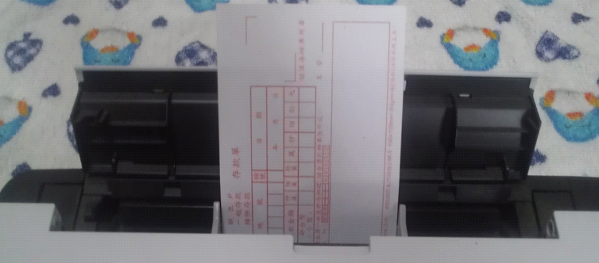

印表機操作說明
如果您想買印表機，或者想了解您現有的印表機是否能夠順利套印表格，您可以先參考選擇印表機說明。
了解印表機的特性
- 列印尺寸：紙張設定太小或太大超出印表機可列印範圍，可能會造成無法套印。
- 列印方向：
- 直印(一般列印方式)(圖1、圖2)：
- 印表機列印字體以水平方式印出。
- 一般的印表機為A4(寬度210mm)大小，如果紙張寬度小於可列印的最大寬度，通常是採用直印，除非紙張長度太短進紙會歪斜，才會改為橫印。
- 橫印：(圖3、圖4)
- 一般印表機僅能印A4紙張的大小(210mm),超過這個寬度，經旋轉紙張方向後若長(297mm)與寬(210mm)均小於A4紙張，就可以採取橫印的方式來完成套印作業。
- 如果表格進入印表機常常會歪一邊時，也可以採用橫印的方式來解除問題。
- 橫向進紙：將表格(支票)橫放(轉90度)的方式進入印表，要記得於軟體設定列印方為橫印，才可順利進紙。
- 列印順序：印表機的列印順序分為「先進先印」、「後進先印」, 會影響表格套印時之邊界設定。
- 列印面：列印有編號的表格(如支票)，需要從編號小的表格開始列印，使用列印面朝上的印表機面(圖1)較為方便。

|
| 圖1 列印面朝上、一般列印方式(直印) |

|
| 圖2 直印(列印的文字與印表機、表格的方向一樣印 |
|

|
| 圖3 橫印 |

|
| 圖4 橫印(列印的文字與印表機、表格的方向不一樣(轉90度) |